Each of the 38 flower remedies is for a specific emotion or mental pattern. They allow negative emotions to move through us so we can learn from them. The remedies are gentle but powerful. Below are brief descriptions of the 38 remedies, plus the crisis formula, also known as Rescue Remedy™.
 Agrimony |
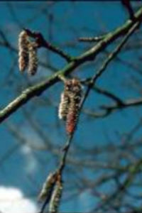 Aspen |
 Beech |
 Centaury |
| 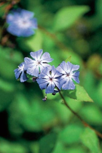 Cerato |
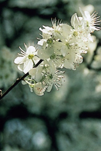 Cherry Plum |
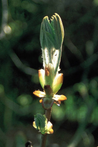 Chestnut Bud |
 Chicory |
| 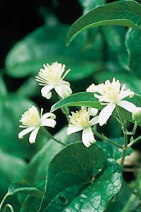 Clematis |
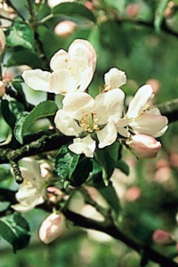 Crab Apple |
 Elm |
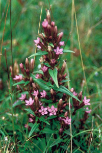 Gentian |
| 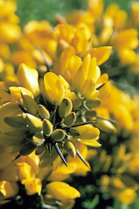 Gorse |
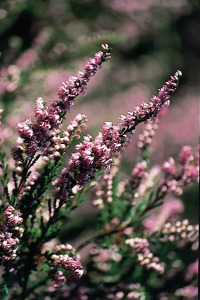 Heather |
 Holly |
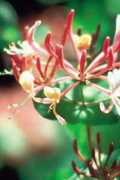 Honeysuckle |
| 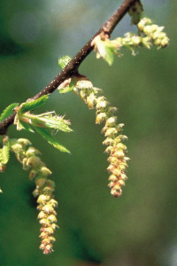 Hornbeam |
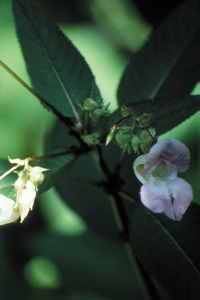 Impatiens |
 Larch |
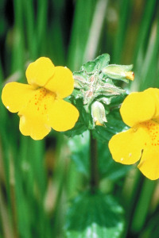 Mimulus |
 Mustard |
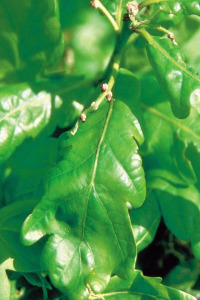 Oak |
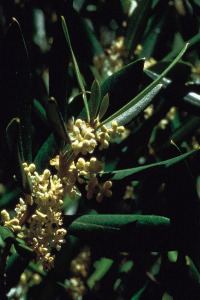 Olive |
 Pine |
| 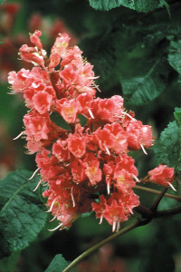 Red Chestnut |
 Rock Rose |
Rock Water |
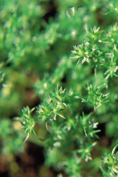 Scleranthus |
| 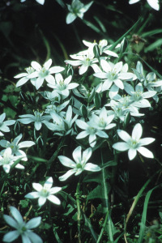 Star of Bethlehem |
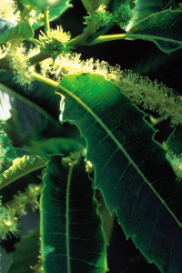 Sweet Chestnut |
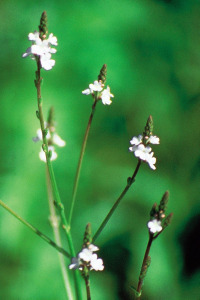 Vervain |
 Vine |
 Walnut |
 Water Violet |
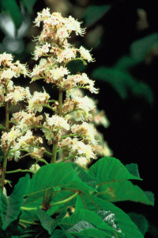 White Chestnut |
 Wild Oat |
| 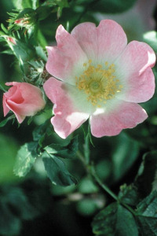 | Wild Rose |
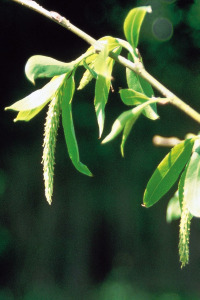 Willow |